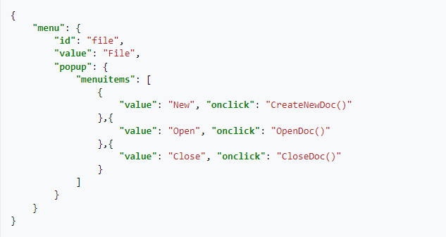
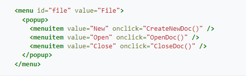

ARCHIVO PLANO
XML
JSON
PARQUET
¿QUE ES?
Los archivos planos son una colección de información que está almacenada y es accedida de forma organizada en una base de datos. Se suele usar para almacenar información en una forma no estructurada.
Un ejemplo son los documentos CSV (valores separados por coma), donde la información es presentada en cada campo separado por una coma.
EJEMPLOS
Existen muchos tipos diferentes de archivos planos, cada uno con su propia estructura para representar información. Aquí hay algunos ejemplos:
¿QUE ES?
El lenguaje de marcado extensible (XML) permite definir y almacenar datos de forma compartible. XML admite el intercambio de información entre sistemas de computación, como sitios web, bases de datos y aplicaciones de terceros. Las reglas predefinidas facilitan la transmisión de datos como archivos XML a través de cualquier red, ya que el destinatario puede usar esas reglas para leer los datos de forma precisa y eficiente.
¿PORQUE ES IMPORTANTE?
El lenguaje de marcado extensible (XML) es un lenguaje de marcado que proporciona reglas para definir cualquier dato. A diferencia de otros lenguajes de programación, XML no puede realizar operaciones de computación por sí mismo. En cambio, se puede implementar cualquier software o lenguaje de programación para la administración estructurada de datos.
BENEFICIOS
¿QUE ES?
JSON (acrónimo de JavaScript Object Notation, 'notación de objeto de JavaScript') es un formato de texto sencillo para el intercambio de datos. Se trata de un subconjunto de la notación literal de objetos de JavaScript, aunque, debido a su amplia adopción como alternativa a XML, se considera un formato independiente del lenguaje.
EJEMPLO
A continuación se muestra un ejemplo simple de definición de barra de menús usando JSON y XML.
JSON:
Es una posible representación JSON del siguiente XML:
¿QUE ES?
El formato Parquet, es un tipo de fichero que contiene datos (de tipo tabla) en su interior, de forma similar a cuando hablamos del fichero tipo CSV. Aunque parezca obvio, los ficheros parquet tienen extensión .
parquet y a diferencia de un CSV, no es un fichero en texto plano (se representa de forma binaria), lo que significa que no lo podemos abrir y examinar con un simple editor de texto.

CODIGO .JS
function chispum (num){ if (num % 15 == 0){ return 'chispum';} if (num % 3 == 0){ return 'chis';}< if (num % 5 == 0) return 'pum';} return num; } module.exports = chispum;
CODIGO TEST.JS
const chispum = require("./chispum") describe ("chispum", () =>{ test("deberia imprimir chispum si recibe un multiplo de 3 y 5", () =>{ const expected ='chispum'; const result = chispum (30); expect (expected).toBe(result); });
test("deberia imprimir chis si recibe un multiplo de 3", () =>{ const expected ='chis'; const result = chispum (6); expect (expected).toBe(result); });
test("deberia imprimir pum si recibe un multiplo de 5", () =>{ const expected ='pum'; const result = chispum (10); expect (expected).toBe(result); }); });